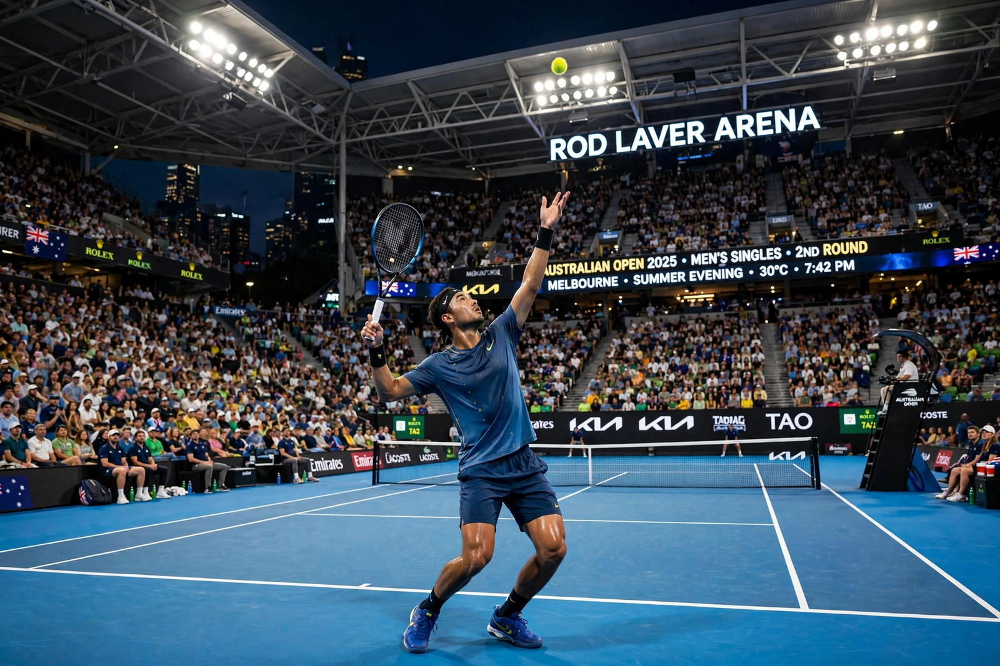

From Wikipedia, the free encyclopedia
| Australian Open | |
|---|---|
 A night match on the blue hard court of Rod Laver Arena with a full crowd | |
| Founded | 1905 |
| Location | Melbourne Park, Melbourne, Australia |
| Surface | Hard (outdoor) |
| When | Mid-to-late January |
| Category | Grand Slam |
| Most men's titles | Novak Djokovic (10) |
The Australian Open is a tennis tournament held annually over two weeks in January at Melbourne Park in Melbourne, Australia. First played in 1905 as the Australasian Championships, it is the first of the four Grand Slam tournaments of the year, preceding the French Open, Wimbledon and the US Open. It is played on outdoor hard courts, with its main show court, Rod Laver Arena, named after Australian great Rod Laver. The tournament is famous for extreme summer heat, night-session atmosphere and record attendances, regularly drawing the largest crowds in the sport.
For much of the 20th century the event's remote location meant many leading overseas players did not travel to it, and Australian champions such as Roy Emerson and Margaret Court — still the most successful singles player in the tournament's history with 11 titles — dominated. The move to Melbourne Park in 1988, from the grass courts of Kooyong, revived the event; it switched from grass to hard courts and grew into a commercial and popular giant of the tennis calendar. Novak Djokovic has won a record ten men's singles titles, while Serena Williams won seven in the Open Era.
Jannik Sinner won the men's singles in 2024 and 2025, his first major titles, while the 2025 women's champion was Madison Keys, who defeated two-time defending champion Aryna Sabalenka in the final. The tournament also features men's and women's doubles, mixed doubles, wheelchair and junior events.
Categories: Australian Open | Tennis tournaments in Australia | Grand Slam (tennis)